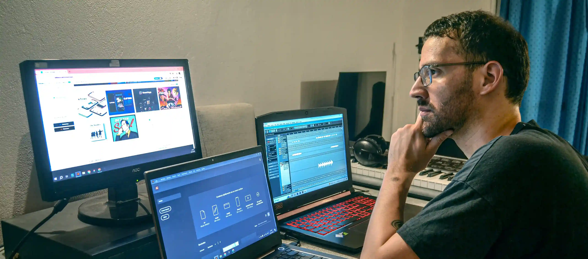
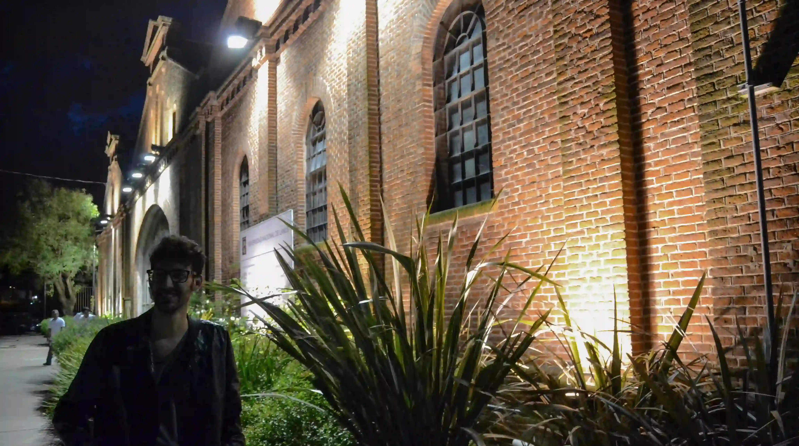
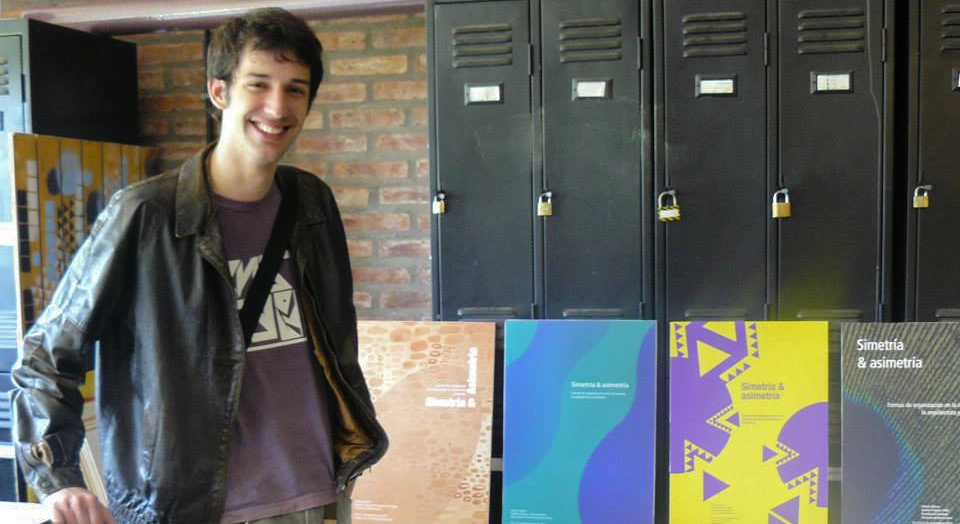
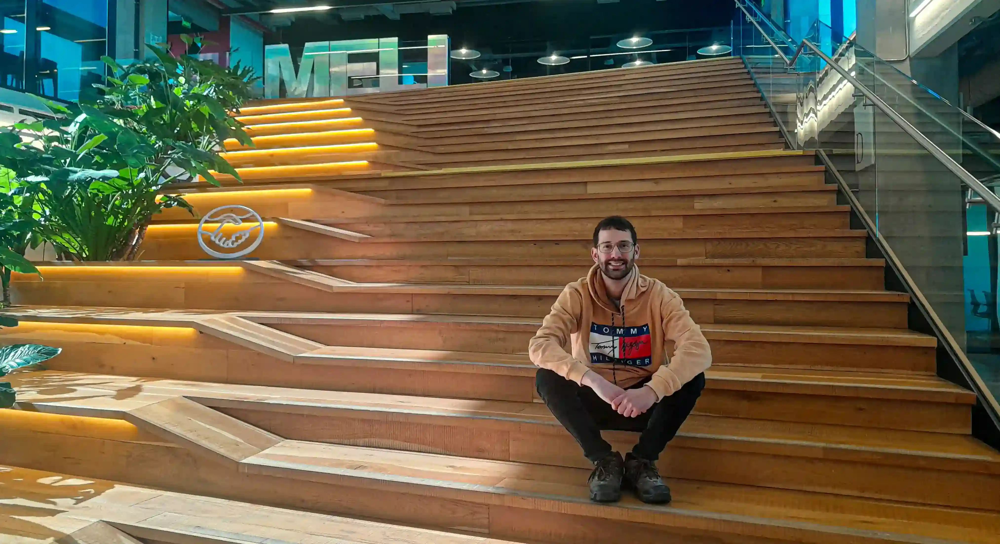

Historia

Ezequiel Senosiain es un profesional del diseño y la comunicación visual oriundo de Temperley, Buenos Aires, Argentina. Se formó como Licenciado en Diseño y Comunicación Visual, consolidando una base sólida en identidad, composición y lenguaje visual.
Con el objetivo de ampliar su enfoque hacia lo digital, posteriormente se especializó en diseño UX/UI, incorporando metodologías centradas en el usuario y el desarrollo de interfaces funcionales e intuitivas. Actualmente, continúa su formación en desarrollo frontend, integrando sus conocimientos de diseño con la implementación técnica para crear experiencias digitales completas.
A lo largo de su trayectoria, ha trabajado para diversas empresas y marcas reconocidas como Mercado Libre, Bayer, Elea, el Hipódromo de Palermo, Paladini, Rapanui y Life Seguros, entre otras, participando en proyectos que combinan estrategia, diseño y tecnología.


